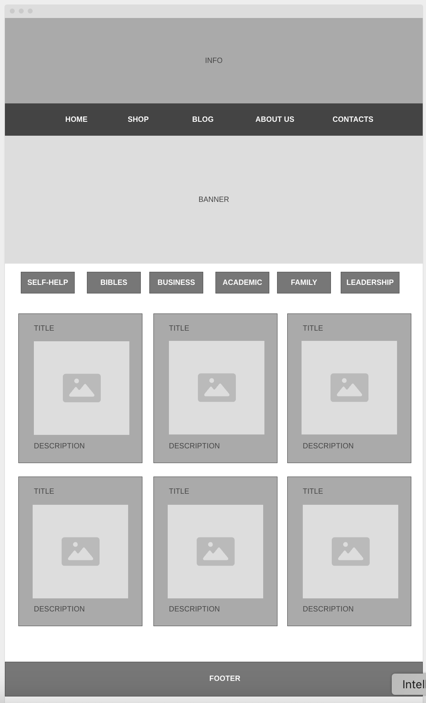

Site Name
Book Haven — This name represents a welcoming and peaceful place for book lovers to discover, explore, and purchase books online.
Optional domain: bookhavenstore.com
Site Purpose
The purpose of this website is to provide an easy and engaging online experience for book enthusiasts to browse, search, and buy books of various genres. The site will also share book recommendations, reviews, and author highlights.
Scenarios
- Which books are currently the bestsellers in fiction?
- How can I contact customer service for delivery inquiries?
Color Scheme
Primary Color: #4A7C59 (used for headings, buttons, and accents)
Secondary Color: #F5F5DC (used for background and section highlights)
Typography
Heading Font: Roboto (used for titles and section headers)
Body Font: Open Sans (used for general text and paragraphs)
Wireframe
Mobile View
A simplified layout for small screens.
Desktop View
Expanded layout with more visible categories and featured books.
